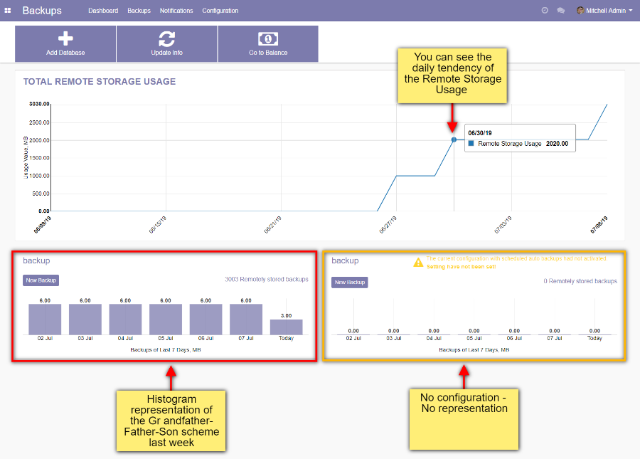
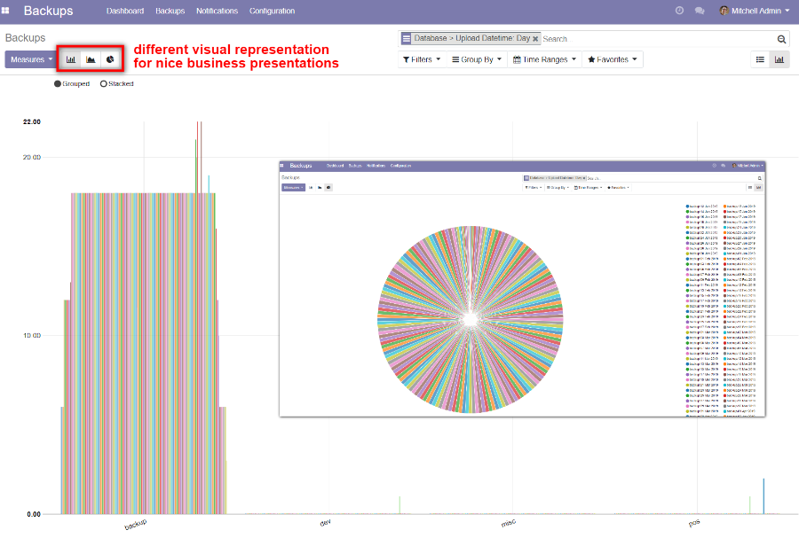
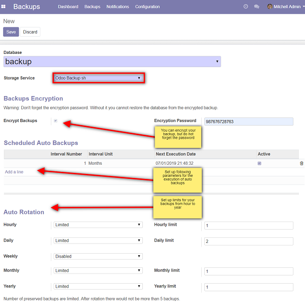

How it works


Backups
- Open the menu [[ Backups ]] >> Dashboard
- After redirection please login in Odoo.com
- Set up a new configuration [[ Backups ]] >> Dashboard >> Add Database
- Choose the Database in the database field
- Encrypt your backup if you need, but do not forget the password
- Enter Interval Number, Interval Unit, New execution Date
- Select/unselect Active checkbox
- Click on Save button
- Go to [[ Backups ]] >> Dashboard
- Click on New Backup in the appeared configuration

Restore
- Please proceed to the Database Manager: /web/database/manager
- Click on Restore via Odoo-backup.sh button
- Choose the backup that you want to restore
- In the open Pop-up window enter Master Password, fill the Database Name
- In order to avoid conflicts between databases choose if this database was moved or copied
- Click on Continue button
Backup is restored in one click without any additional manipulations such as downloading-uploading process.

Need our service?
Contact us by email or fill out request form
- apps@it-projects.info
- https://www.it-projects.info/page/website.contactus
- https://m.me/itprojectsllc
- skype@it-projects.info
Tested on Odoo
12.0 community
12.0 community
Tested on Odoo
12.0 enterprise
12.0 enterprise